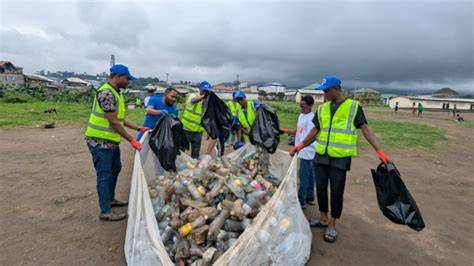

Our Projects
Explore the initiatives we are working on to make Mbombela greener and more sustainable.

Tree Planting
Since our founding, tree planting has been at the core of GreenFuture’s mission. We aim to plant over 10,000 trees across Mpumalanga to restore ecosystems, combat climate change, and provide shade and cleaner air for communities. Schools and volunteers play a vital role in this initiative, making it a truly community-driven effort.
Each tree planted represents a step towards a greener Mbombela, and we track our progress to showcase the long-term impact of this project.

Clean-Up Campaigns
Our clean-up drives focus on rivers, parks, and public spaces. These campaigns not only beautify Mbombela but also raise awareness about waste management and recycling. By involving residents, schools, and eco-volunteers, we encourage responsible waste disposal and community pride.
Over 50 clean-up campaigns have already been conducted, and each event strengthens our partnerships with local businesses and civic groups.

School Workshops
Education is key to lasting change. We partner with schools to deliver workshops on sustainability, recycling, and environmental protection. These sessions empower learners to become eco-champions in their communities and inspire future generations to value and safeguard nature.
Our workshops include interactive activities, recycling demonstrations, and tree-planting exercises that make sustainability practical and engaging for learners.
📅 Project Timeline
This timeline tracks the progress of GreenFutureWebsite against the rubric requirements.
| Week | Task | Deliverable | Status |
|---|---|---|---|
| 1–2 | Content gathering, sitemap, wireframes | Draft site plan with organized content and visual wireframe | ✅ Completed |
| 3–4 | HTML structure | Semantic layout and navigation | ✅ Completed |
| 5–6 | CSS styling & responsive design | Styled prototype with consistent branding and mobile responsiveness | ✅ Completed |
| 7–8 | JavaScript forms & interactivity | Functional enquiry form, scroll‑to‑top button, and dynamic features | ✅ Completed |
| 9 | Testing, SEO, submission | Final website tested, optimized, and submitted | ✅ Completed |